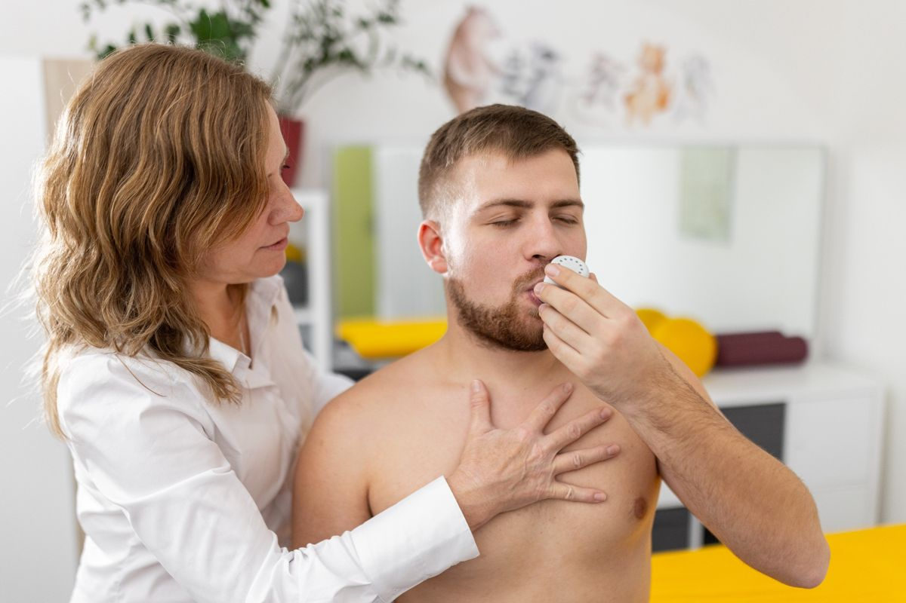

Dechová fyzioterapie
nadechnout se naplno
Pomáháme při chronických dechových onemocněních, mimojícnovém refluxu i sportovcům, kteří chtějí zvýšit výkon.

Jak to u nás probíhá
Dech, který se dá změřit
Na začátku
Vysvětlíme, jak dýcháte
Anatomie bránice a souvislosti všech dechových svalů – srozumitelně a názorně.
Vyšetření
Změříme sílu dechu
Dechový rytmus a vzor, držení těla. Sílu dechových svalů a vitální kapacitu plic měříme trenažérem Airofit.
Týdny
Trénujete doma
Podle výsledků vybereme vhodný dechový trénink na doma.
Pravidelně
Měříme znovu
Sílu dechových svalů průběžně kontrolujeme a obtížnost tréninku přizpůsobujeme.
respirační fyzioterapie
Chronická dechová onemocnění
S fyzioterapeutem cvičíte techniky inhalace, autogenní drenáž, kontrolovaný kašel a huffing a drenážní techniky.
- astma
- cystická fibróza
- deformity hrudníku a vadné držení těla
trénink dechových svalů
Reflux a výkon
Trénink dechových svalů pomáhá zmírnit potíže spojené s mimojícnovým refluxem. Sportovcům pomáhá zvyšovat výkon.
- mimojícnový i jícnový reflux
- sportovci – vyšší výkon
- úprava držení těla
Kdo se o vás postará
Dvě specialistky na dech


Lucie Šancová
Trénink dechových svalů, reflux
Hledá skutečné příčiny bolesti – nejraději u prstů a rukou lezců.
Uděláme první
krok spolu?
Individuální fyzioterapie dospělých stojí 1 400 Kč, návštěva trvá až 60 minut. Vezměte s sebou zprávy od lékaře, pokud je máte. Děti: 1 250 Kč.